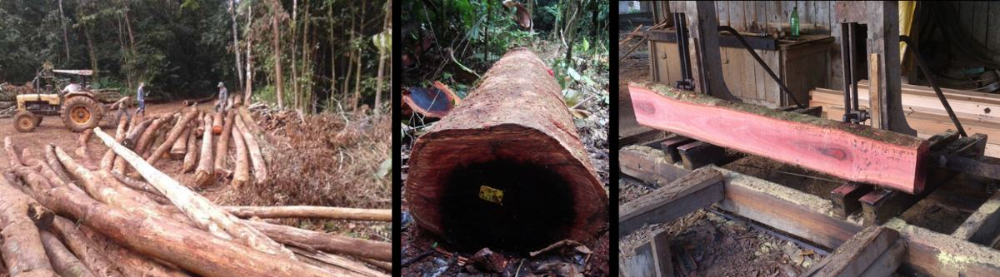

➤ Lista de Espécies Arbóreas encontradas
➤ Resumo das Unidades Amostrais
➤ Estimativas de atributos florestais
➤ Modelos de volume, biomassa e necromassa
➤ Banco de dados de densidade da madeira
➤ Acesso ao banco de dados SINFLOR
Lista de espécies
Lista das espécies encontradas no componente arbóreo das florestas avaliadas pelo FlorestaSC.
A lista contém informações sobre as espécies como grau de ameaça (Livro Vermelho e CONSEMA), grupo ecológico*, formas de raridade (IFFSC, 2017 – Vol. 7), dentre outras. Também é possível identificar pela lista em quais regiões fitoecológicas e bacias hidrográficas cada espécie foi encontrada.
*O grupo ecológico foi definido com base na literatura (Flora Ilustrada Catarinense, Projeto Madeira de SC, etc.) e revisão feita por especialistas do FlorestaSC.
AVISO: Os dados por município só englobam dados de parcela, não de herbário, e somam 449 Unidades Amostrais em 205 municípios. Como o objetivo é a análise do estado, não há parcelas em todos municípios. Alguns municípios não possuem Unidades Amostrais por serem pequenos, por não haver mais floresta, dentre outros motivos.
Na dúvida entre em contato: florestasc@furb.br
Exemplares de plantas arbóreas, epífitos, pteridófitas e herbáceas coletados pelo FlorestaSC foram tombados no Herbário FURB.
Dados sobre as espécies e locais de coleta estão disponíveis em plataformas online como:
Resumo das unidades amostrais
Os resumos das Unidades Amostrais estão organizados nas pastas, de acordo com as respectivas regiões fitoecológicas. Os resumos também podem ser acessados através dos links fornecidos no arquivo lista_parcelas_comLink. Além dos links, outras informações das Unidades Amostrais podem ser consultadas no arquivo como a região fitoecológica, municípios, bacias hidrográficas, etc.
Mapa de localização das Unidades Amostrais.
Estimativas de atributos florestais
Os estoques médios estimados para cada tipo florestal de Santa Catarina apresentados a seguir foram gerados com base no "ponto amostral", isso é, considerando todos os usos da terra nas UAs. As estimativas foram geradas a partir de dados coletados no Ciclo 1 de medições FlorestaSC.
Mais informações sobre como as estimativas foram geradas são encontradas nesta nota científica.
Estoques médios por hectare (± intervalo de 95% de confiança) e para a área total de floresta em cada tipologia florestal de Santa Catarina, considerando árvores com DAP* ≥ 10 cm.
*DAP = Diâmetro à altura do peito, medido a 1,30 m do solo.
Modelos alométricos
Modelos alométricos utilizados atualmente pelo FlorestaSC no cálculo de predições de altura total, volume do fuste e biomassa acima do solo por Unidade Amostral
Modelos alométricos para predição de volume e biomassa construídos pelo FlorestaSC

Modelo para predição do volume total de árvores da Floresta Ombrófila Densa, construído a partir de árvores amostradas numa floresta secundária no município de Guaramirim (SC).
Esta planilha Excel está programada para calcular a predição de volume total utilizando o modelo construído pelo FlorestaSC.

Modelos genéricos e específicos para a predição da biomassa total de árvores da Floresta Ombrófila Densa, construídos a partir de árvores amostradas numa floresta secundária em Guaramirim (SC).

Modelos genéricos e específicos para a predição da biomassa total de espécies arborescentes em Santa Catarina.
Densidade da madeira
A densidade básica (ou massa específica básica) é uma propriedade da madeira definida como a razão entre a massa seca da madeira e seu volume saturado (ou verde). Esse atributo é importante na estimativa de biomassa florestal, em estudos sobre ecologia funcional, tecnologia da madeira, entre outros.
O FlorestaSC iniciou em 2014 a coleta de amostras para quantificação da densidade básica da madeira de espécies nativas em uma área de Floresta Ombrófila Densa em Guaramirim (SC). Com o propósito de ampliar o banco de dados, novas amostras de madeira têm sido coletadas durante as atividades do 2° Ciclo de Medições do FlorestaSC e também em propriedades privadas. Até o momento, incluindo as determinações feitas a partir de amostras coletadas em Guaramirim (SC), o FlorestaSC tem a densidade básica da madeira (kg/m³) para 153 espécies arbóreas; 86 espécies amostradas na Floresta Ombrófila Densa, 46 na Floresta Ombrófila Mista e 42 na Floresta Estacional Decidual. O banco de dados inclui a densidade básica da madeira das espécies com maior área basal nesses tipos florestais, como Alchornea triplinervia (tanheiro), Hieronyma alchorneoides (licurana), Miconia cinnamomifolia (jacatirão), Lithraea brasiliensis (bugre), Mimosa scabrella (bracatinga), Cupania vernalis (camboatá-vermelho), Luehea divaricata (açoita-cavalo), dentre outras.
A publicação abaixo contém informações detalhadas sobre a elaboração do banco de dados, assim como planilhas contendo os dados de densidade da madeira (faça o download dos materiais suplementares).
Publicação:
Oliveira, L.Z.; Uller, H.F.; Klitzke, A.R; Eleotério, J.R; Vibrans, A.C. Towards the fulfillment of a knowledge gap: Wood densities for species of the subtropical Atlantic Forest. Data, v. 4, p. 104, 2019.
Nos materiais suplementares da publicação também são fornecidos dados de densidade básica da madeira (kg/m³) de 719 espécies arbóreas observadas pelo FlorestaSC. A densidade básica da madeira das espécies não amostradas foi determinada a partir dos dados das 153 espécies e do banco de dados Global Wood Density (ver publicação para mais detalhes). Além desses dados, é fornecida outra planilha contendo a densidade básica da madeira média para 477 Unidades Amostrais do FlorestaSC.
É importante salientar que a base de dados será eventualmente atualizada à medida que a densidade da madeira de outras espécies forem determinadas.
Tipologias florestais de Santa Catarina e locais de coleta de amostras para determinação da densidade básica da madeira.


Sortimentos (aplicativo)
A exploração intensiva das florestas nativas da Região Sul do Brasil causou o esgotamento dos estoques de madeira de alto valor, como a canela-preta, imbuia e grápia. Restrições legais e mudanças socioeconômicas subsequentes promoveram a expansão de florestas secundárias. Além de sua importância ecológica, as florestas secundárias possuem um potencial produtivo promissor, com espécies de rápido crescimento e madeira de boa qualidade.

Floresta Ombrófila Densa secundária manejada em Guaramirim/SC. Créditos: Heitor F. Uller.
Nesse contexto, um Aplicativo Web para predição de Sortimentos de Toras para Florestas Secundárias foi desenvolvido pelo FlorestaSC, visando contribuir para o desenvolvimento do manejo sustentável de florestas secundárias na região.
O aplicativo contabiliza o número e o volume de toras por classes dimensionais (abrangendo diferentes comprimentos e diâmetros mínimos) que podem ser extraídas de um tronco de espécies que ocorrem em três tipos florestais: Floresta Ombrófila Densa, Floresta Ombrófila Mista e Floresta Estacional Decidual.
Os sortimentos de toras podem ser preditos para espécies como Miconia cinnamomifolia (jacatirão), Hieronyma alchorneoides (licurana) e Mimosa scabrella (bracatinga), que destacam-se pelo seu rápido crescimento e madeira de boa qualidade.

Manejo de Hieronyma alchorneoides (licurana) em floresta secundária no município de Guaramirim/SC e tora da espécie sendo desdobrada. Créditos: Alfredo C. Fantini e Heitor F. Uller.
O aplicativo foi desenvolvido em linguagem R (pacote ‘shiny’) e utiliza modelos de afilamento construídos pelo FlorestaSC. Para isso, foi utilizado um conjunto de dados coletado pelo FlorestaSC ao longo do estado de Santa Catarina, contemplando cerca de 2.000 troncos e 300 espécies arbóreas.
O aplicativo tem 10 campos onde o usuário deve selecionar uma opção ou inserir informações alfanuméricas. O uso de cada campo é explicado neste TUTORIAL.
Como citar?
Oliveira, L.Z.; Vibrans, A.C. A web tool for predicting log assortments in secondary Atlantic forests using regional taper models. Scientia Agricola v. 83, e20250137, 2026.

Miconia cinnamomifolia (jacatirão).
SUGESTÃO DE LEITURA:
Fantini, A.C.; Siminski, A.; Gaio, M.F. Madeira de florestas secundárias em SC: Nova fonte de renda para os agricultores. Agropecuária Catarinense, v. 29, n. 2, p. 15–18, 2016.
Banco de dados SINFLOR
SINFLOR
Sistema de Gerenciamento de Dados do FlorestaSC Saiba mais →

O Sistema de Gerenciamento de Dados do FlorestaSC – SINFLOR foi desenvolvido para o cadastro de todos os dados coletados nas Unidades Amostrais do FlorestaSC e para a geração de estimativas diversas, as quais são retornadas ao usuário em forma de relatórios.
Os usuários cadastrados no SINFLOR têm amplo acesso a dados e relatório. Os usuários não cadastrados estão limitados às informações definidas como públicas (relatórios básicos, mapas e informações sobre as espécies encontradas):
Geração de relatórios: *Formato: Relatório on-line ou Arquivo (.csv)
O Sinflor fornece Relatórios de dados disponíveis do 1° Ciclo (2007-2010) e do
2° Ciclo de medições (2014-2019).
O sistema permite ao usuário...
- Aplicar filtros para acessar os dados por fitofisionomia, estágio sucessional, bacia hidrográfica, microregião, mesoregião, município ou Unidade de Conservação;
- Gerar dados tomando por base a área total da Unidade Amostral ("Área Levantada") ou apenas a área efetivamente coberta por floresta dentro da UA ("Área com Floresta");
- Escolher entre incluir ou não as árvores mortas nos cálculos, através das opções "com árvores mortas" e "sem árvores mortas" (portanto, apenas as árvores vivas);
- Acessar os dados em forma de "Relatório" (pop-up) ou como "Arquivo", isto é, como planilha excel (.csv), clicando no botão "baixar";
- Para alguns relatórios é possível escolher opções que permitem incluir campos adicionais ao relatório (caixa "Quanto aos campos a serem exibidos").
Lista de relatórios disponíveis:
Estrutura Horizontal: Tabela fitossociológica das espécies (número de indivíduos, área basal, densidade, dominância, frequência, valor de importância, valor de cobertura, de importância e valores máximos, médios e mínimos de DAP e Altura (fuste e total).
Estrutura Diamétrica: Calcula os parâmetros número de indivíduos, área basal, densidade e dominância por classe, por parcela, por parcela-classe, por espécie-parcela e por espécies-classe.
Estrutura Vertical - Posição Sociológica: Estima a importância das espécies considerando a sua participação nos estratos verticais. Número de indivíduos por classe de altura e por espécie (componente arbóreo). Cálculo da Posição Sociológia Absoluta (PSA) e relativa (PSR), Regeneração Natural: Número de indivíduos por classe de altura e por espécie (componente regenerante). Cálculo da Classe Absoluta de Tamanho (CAT) e Classe Relativa de Tamanho (CRT) e Regeneração Natural Relativa (RNR) e VIA: Valor de importância ampliado.
Florística: Ocorrência das espécies e famílias botânicas nas Unidades Amostrais (componentes arbóreo, regenerante e florístico).
Diversidade: Calcula riqueza de espécie e os índices de Shannon-Weaver (H'), de Simpson (C) e de Pielou (J) por Unidade Amostral.
Matriz de Dados: Retorna matrizes de dados de ocorrência (conhecidas como binárias ou de presença - 1/ausência - 0), ou quantitativos (número de indivíduos, área basal, densidade/dominância) das espécies por Unidade Amostral (estrato de árvores com DAP ≥ 10cm).
Estimativas: Gera estimativas populacionais (médias e intervalos de confiança) para as variáveis densidade (ind./ha), diâmetro (cm), altura (m), área basal (m²/ha), volume de fustes (m³/ha), peso seco (Mg/ha), carbono (Mg/ha) e riqueza de espécies.
Vídeos explicativos
O FlorestaSC possui uma vasta quantidade de informações sobre as florestas catarinenses. Para possibilitar ao público o acesso e consulta a estas informações, o FlorestaSC tem utilizado recursos online e desenvolvido produtos e ferramentas para disponibilizar seus dados.
Com o objetivo de instruir e capacitar o público para utilizar as ferramentas de consulta de dados do FlorestaSC, vamos divulgar nesta seção uma série de vídeos explicativos. Nos vídeos vamos explicar, por exemplo, sobre os índices e indicadores fitossociológicos, uso do Sinflor para gerar cálculos fitossociológicos por tipo de floresta e limite geográfico (municípios e outros), consulta de informações florísticas em plataformas virtuais, obtenção de dados do mapeamento do uso da terra do FlorestaSC, além de fornecer uma visão geral sobre o nosso site e os livros do FlorestaSC.
Aproveite para inscrever-se em nosso canal do YouTube.
Vídeo: Portal do FlorestaSC
O vídeo explora o conteúdo do portal do FlorestaSC, fornecendo orientações ao usuário sobre a busca de informações e produtos gerados pelo FlorestaSC.
Os principais temas abordados neste vídeo são:
- Visão geral do Portal do FlorestaSC
- Acesso aos resultados dos Ciclos 1 e 2 de medição
- Acesso aos produtos do FlorestaSC (lista de espécies, resumo das parcelas, estimativas, banco de dados, publicações e outros)
- O mapeamento da Cobertura Florestal de Santa Catarina
Vídeo: Plataformas para consulta de dados sobre a flora e coletas botânicas
Neste vídeo é explicado o uso de quatro plataformas virtuais importantes para consulta de informações sobre espécies de plantas e coletas botânicas, incluindo registros feitos pelo FlorestaSC.
Público-alvo: Gestores de Unidades de Conservação
As plataformas apresentadas são:
Vídeo: Plataforma de mapas do FlorestaSC e download de arquivos
Através deste vídeo, você vai conhecer um pouco sobre o projeto MapeiaSC e sua plataforma de dados e mapas. Também vai aprender como se cadastrar na plataforma e realizar o download de shapefiles e outros tipos de arquivo.
- O Mapeamento da Cobertura Florestal de Santa Catarina) e acesso à plataforma de mapas do FlorestaSC
- Conteúdo da plataforma: Camadas (layers), Documentos e Mapas
- Baixando arquivos shape e raster
Vídeo: Geração de relatórios de cálculo no Sinflor
O objetivo deste vídeo é orientar os usuários no uso do Sinflor para gerar lista de espécies e relatórios de estimativas e índices fitossociológicos, a partir do conjunto de dados do FlorestaSC.
- O bando de dados Sinflor
- Filtros básicos dos relatórios, e alguns conceitos como área levantada x área com floresta e parcelas da grade x parcelas complementares
- Relatórios públicos do Sinflor: filtros específicos e exemplos
Vídeo: Como o FlorestaSC gera estimativas de atributos florestais?
Neste vídeo é demonstrado como são geradas as estimativas de atributos florestais, com base nos dados do FlorestaSC.
Os principais temas abordados são:
- Conceitos de população, amostragem e inferência estatística
- Amostragem do FlorestaSC
- Estimativas do FlorestaSC de atributos florestais
- Geração de estimativas de atributos florestais no SINFLOR (Sistema de Inventário Florestal)
Vídeo: O que é Diversidade biológica?
- Conceitos relacionados à diversidade
- Índices de diversidade
- Insights sobre diversidade e gestão ambiental
- Geração de estimativas de diversidade no SINFLOR (Sistema de Inventário Florestal)
Vídeo: Mortalidade das árvores
- Causas naturais e antrópicos da mortalidade das árvores
- Monitoramento da mortalidade
- Distribuição espacial da mortalidade no estado de Santa Catarina
- Principais famílias afetadas pela mortalidade
Painéis interativos
Os painéis interativos de dados (dashboards) permitem a realização de consultas rápidas sobre as Unidades Amostrais e as Espécies arbóreas avaliadas pelo FlorestaSC, através da aplicação de filtros de pesquisa.
As consultas aos painéis possibilitam responder a diversas perguntas como:
- Quais as espécies de árvores que o FlorestaSC encontrou em um determinado município?
- Em quais municípios o FlorestaSC encontrou uma determinada espécie?
- Quais espécies ameaçadas avaliadas pelo FlorestaSC e onde foram encontradas?
- Quais Unidades de Conservação foram visitadas pelo FlorestaSC e quais espécies foram nelas encontradas?
Os painéis de dados disponíveis são:
- Espécies Arbóreas e Dados Ecológicos
- Espécies Arbóreas nas Unidades Geográficas
- Espécies Arbóreas nas Unidades de Conservação
CLIQUE AQUI e acesse nossos painéis de dados:

Página migrada de floresta.sc.gov.br.